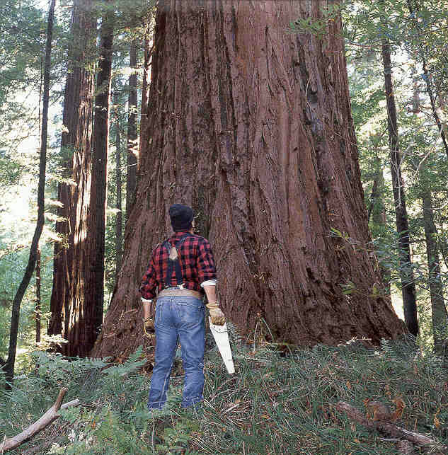

Over the course of the PCS program we have developed a pretty solid workflow. At least I think so at this stage in my coding career. This is something I marvel at in retrospect and don't throw around lightly. I have come from not being able to change the background color on a static HTML page, to building responsive and fluid pages, Rails applications, JavaScript plugins, and managing to get them up and hosted on Heroku. All this while managing to miss only a handful of meals, and staying on good terms with my significant other. Phhhheeew
Heroku is the portion that would like to touch on today, and one aspect in particular that left many people, both students and teachers, scratching their heads. When we were going to serve our application to Heroku all of the images linked through our CSS went 404 (could not be found). We went about any method we could including trying every image tag link in rails inventory. All to no avail.
background-image:url(<%= image_tag('IMAGE_NAME') %>)
background-image: url('RELATIVE_PATH');
background-image: asset-url('IMAGE_NAME');
OUR EVENTUAL FIX WAS:
background-image: asset-data-url('RELATIVE_ASSET_PATH');
I should mention that this is being utilized with the Sass-rails gem. But in the meantime! If you are having issues with loosing static images from your CSS when deploying to Heroku, this is what worked for my team.
I can image the experienced developers out there right now shaking their heads and computer screens screaming, for some reason I am completely unaware of, but I assure you. We swam through StackOverflow and all of the other queries we could imagine, hunting for the answer and this was the only one that worked. It should probably only be used for small assets and nothing of major consequence, but it was just what we needed for our accent images and small CSS touches to add our personal touch.
This week as we begin the Gradual Relinquishment of Responsibilities (GRR), we have broken off in to new groups for our VERY FIRST RAILS APPLICATION!! Finally the day comes where we move away from making yelling Grandmothers functioning only in the realm of the command line and we get to experience what and how we will be applying this knowledge base in practice.
So the project I have chosen will be a migration of an existant e-commerce site 28 Day Hug that was previously built and hosted through WordPress, and migrate it over to a full Rails application, including User logins, Profiles, and payment processing through a Stripe API call.
Thus far it has been an interesting experience just breaking the chains put in place by the original programmer, and I have learned more with regard to reading anothers code than I ever would have expected. Having never needed to decipher and attempt to infer from another's programmers work, and I can whole heartedly say that I now fully understand that code should be written for other PEOPLE, not simply the machine.
Everything is progressing smoothy (relatively) thus far, and I will make sure to post when we run into our first major head scratcher along the way!
Current Live Project Deployment: 28 Day Hug
Just wanted to pop in to introduce my newest companion and mentor Michael Hartl's Ruby on Rails Tutorial. It is a testament to the community surrounding Ruby that Michael would put together such comprehensive and approachable platform for learning this technology. He provides a beautiful guided forte into rails.
My Sample App: Hosted LIVE!
Happy Tour Time & Welcome to Week 6!!
One of the most pleasent experiences thus far in my brief history with code has been to discover and use of all the wonderful tools that the industry has built to ease the pain of web-design. When faced with a problem that makes me wish I could simply reach into the monitor and place an object where I want it, these keep my sanity intact. Plus, I enjoy giving myself the best chance to avoiding the dreaded experience of going down in flames... Even with the knowledge it can bring. Here is a highlight of my top 5 thus far:
Twitter Bootstrap: A beautiful & EASY framework for creating webpages. While bootstrap screams its name, and it is not hard to spot, once you learn the standard 12 grid layout and class keywords, you are up and running, making acceptable looking pages in minutes. With brilliant documentation, guides and helpers, it is way more fun than fighting pixles the old fashioned way.
Rubular: A regular expression generator for Ruby!!! Eliminate all of the guessing and checking with one of the most powerful tools in our tool box. Talk about a life saver...
Kuler: If you're like me and you have a hard time generating themes and color combinations, this might just be perfect. Take a picture of a beautiful landscape and Kuler will give you the Hex codes for all of the dominant colors in the scene. While I obviously did not use this for a standard B&W layout, you will definitely see Kuler themes from me in the future!
Github:: If you do anything with anybody and code, I am sure you have heard of/use Github religiously. It is the easiest way to share and backup your work one could ever imagine. All it takes is a "git push origin master" in your terminal and your code is instantly available for others to collaborate with, and manipulate. An opensourcerers savior!
Dash: All of our documentation in one easy to search, easy to use App. We just download our needed Docs and they are there for us to search through with zero hang-ups or hubbub. Free to download, cheap to turn off the heckles.
Three weeks ago I began my stint at the Portland Code School. A personal project that came far too quickly & has been as rewarding, as it has been challenging, to put it lightly. I have the pleasure to experience one of my favorite aspects of "immersive" programs, the team aspect that undoubtably arises. Just thinking about the bond that forms amoungst groups of complete strangers, from all walks of life, through a desire to be entirely engrossed in a topic, brings a smile to my face. Even if we are dealing with something that can be, at times, as frustrating as anything imaginable.
It's magical thing. A good group dynamic has the power to bring you up, to fuel a desire to out do your own expectations and to become something great. I look forward to these next couple of months here at PCS and I look forward to getting this stream of consciouness up and running. I apologize in advance for all of the misspellings and grammatical errs.
I leave you with an image to symbolize my stress relief, who could argue.